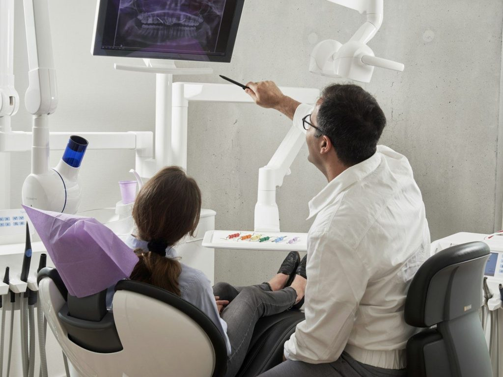
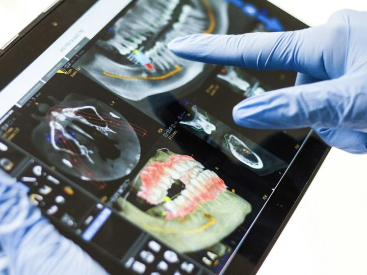
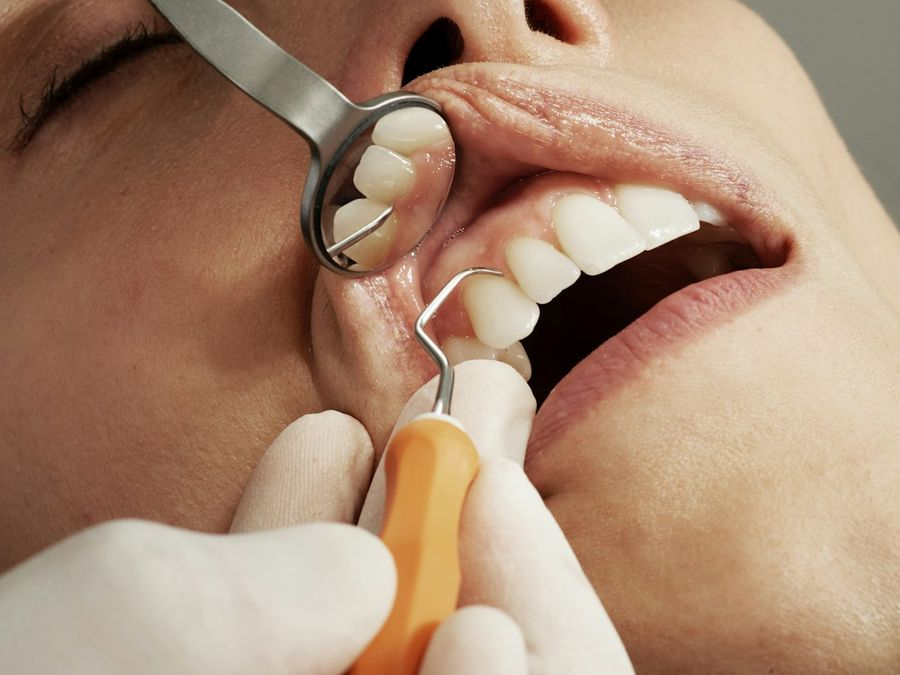
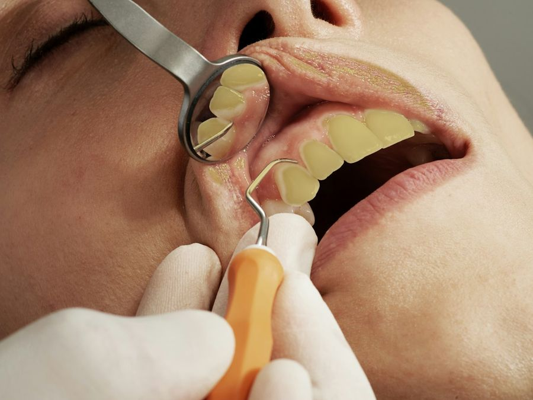
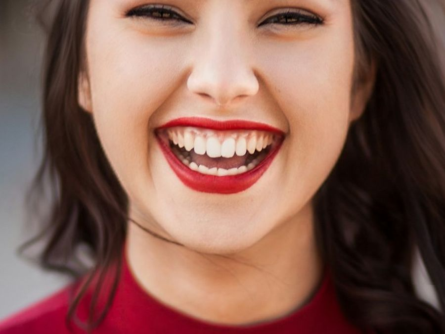
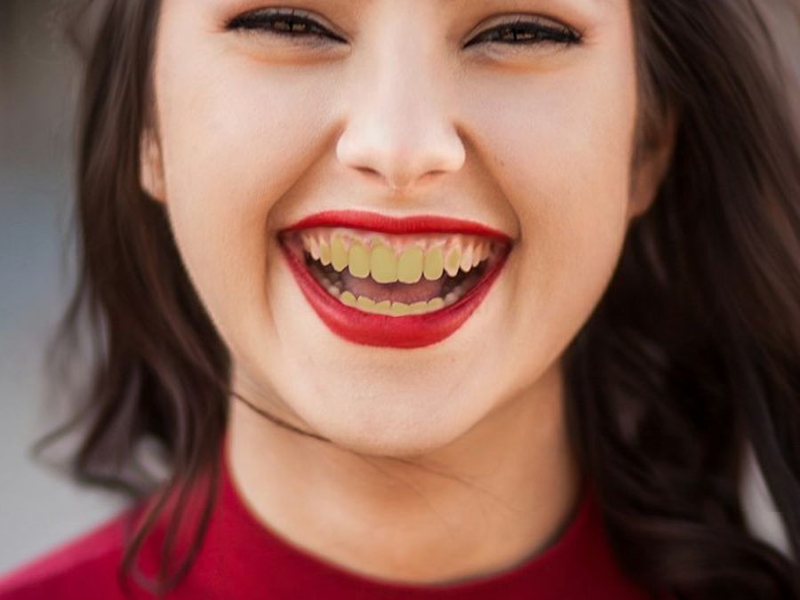
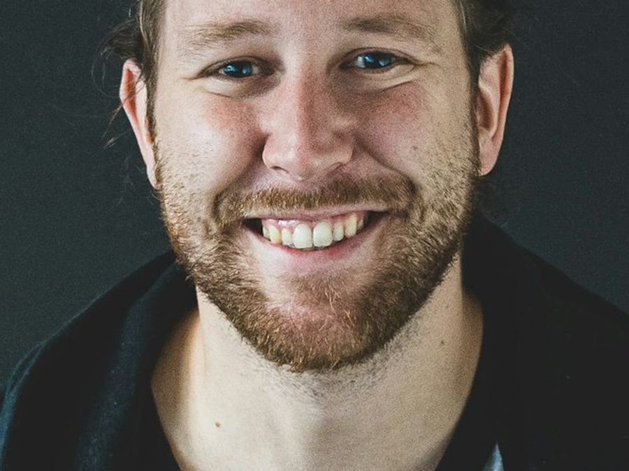
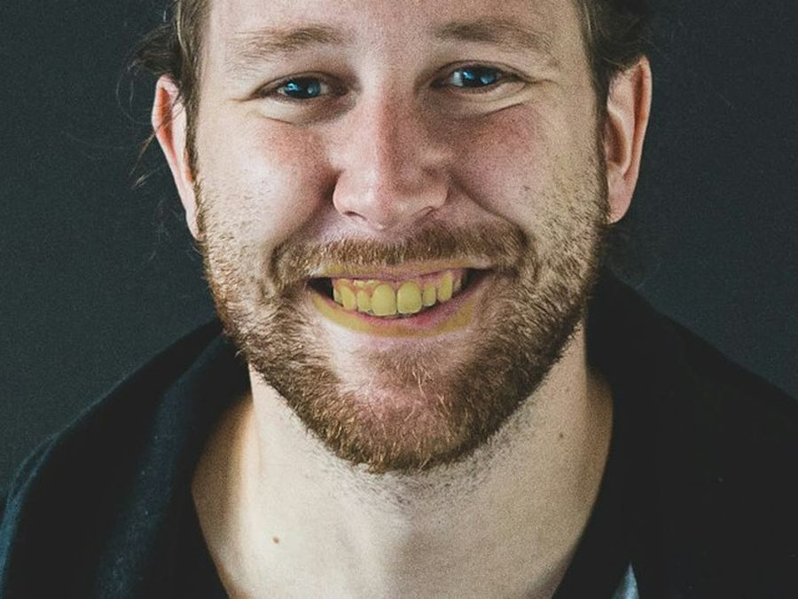

اولین ویزیت دندانپزشکی کودک؛ کی و چطور؟
انجمن دندانپزشکی کودکان توصیه میکند اولین ویزیت کودک تا یکسالگی یا حداکثر شش ماه پس از رویش اولین دندان انجام شود. هدف این ویزیت…
کلینیک تخصصی زیبایی و ایمپلنت، اصفهان
طرح درمان دیجیتال، بیحسی بدون درد و پزشکانی که وقت میگذارند تا همهچیز را توضیح دهند. اولین جلسهٔ مشاوره و اسکن رایگان است.

طرف قرارداد با ۱۰ بیمهٔ تکمیلی
خدمات کلینیک

ایمپلنت دندان جایگزین ثابت و ماندگار برای دندان ازدسترفته؛ با جراحی هدایتشده و پایههای اروپایی. از ۱۸ میلیون تومان لمینت و ونیر سرامیکی پوستههای نازک سرامیکی برای اصلاح رنگ، فرم و فاصلهٔ دندانهای جلو؛ با طراحی دیجیتال لبخند. از ۹٫۵ میلیون تومان سفید کردن دندان (بلیچینگ) روشنکردن رنگ دندان تا چند درجه در یک جلسه، بدون آسیب به مینا و با کنترل حساسیت. از ۴٫۲ میلیون تومان ارتودنسی شفاف (الاینر) صاف کردن دندانها با قالبهای شفاف و متحرک؛ تقریباً نامرئی و بدون براکت فلزی. از ۴۵ میلیون تومان درمان ریشه (عصبکشی) نجات دندانِ دردناک یا عفونی با میکروسکوپ و روتاری؛ بیدرد و معمولاً در یک جلسه. از ۳٫۸ میلیون تومانقبل و بعد
دستگیره را بکشید. همهٔ نمونهها با رضایت کتبی بیمار منتشر شدهاند.






تصاویر نمایشی؛ نتیجهٔ درمان در هر فرد متفاوت است.
مسیر درمان
معاینه، عکس دیجیتال و گفتوگو دربارهٔ خواستهتان؛ حدود ۳۰ دقیقه.
مراحل، تعداد جلسات و هزینهٔ دقیق را کتبی تحویل میگیرید.
بیحسی کامپیوتری و امکان آرامبخشی برای بیماران مضطرب.
چکاپ رایگان ششماهه و ضمانت مکتوب برای ایمپلنت و لمینت.
تجربهٔ بیماران
از کودکی از دندانپزشکی میترسیدم. دکتر کاظمی قبل از هر کاری همهچیز را روی مانیتور نشانم داد و هیچ دردی حس نکردم. حالا راحت میخندم.
دو واحد ایمپلنت گذاشتم. نوبتها دقیق بود و هزینه همان چیزی شد که روز اول گفتند؛ هیچ هزینهٔ پنهانی نداشت.
الاینرها را کسی نمیفهمد! هر ماه با یک پیام یادآوری، پیگیریها مرتب انجام شد.
سؤالات متداول
جلسهٔ اول حدود ۳۰ تا ۴۵ دقیقه است و شامل معاینه، عکس دیجیتال و گفتوگو دربارهٔ طرح درمان میشود. این جلسه برای بیماران جدید رایگان است.
تقریباً همهٔ درمانها با بیحسی موضعی انجام میشود. ما از سیستم بیحسی کامپیوتری استفاده میکنیم که تزریق را بسیار کمدرد میکند. برای بیماران مضطرب امکان آرامبخشی خوراکی هم وجود دارد.
بله. برای درمانهای بالای ۲۰ میلیون تومان، امکان پرداخت در ۴ تا ۶ قسط بدون کارمزد با چک یا سفته وجود دارد.
با بیشتر بیمههای تکمیلی رایج قرارداد داریم (فهرست در صفحهٔ اصلی). فاکتور و مدارک لازم برای بازپرداخت را در همان روز تحویل میدهیم.
با بهداشت خوب و چکاپ منظم، پایهٔ ایمپلنت میتواند تا آخر عمر باقی بماند. روکش روی آن معمولاً ۱۰ تا ۱۵ سال دوام دارد.
مجلهٔ سلامت دهان
انجمن دندانپزشکی کودکان توصیه میکند اولین ویزیت کودک تا یکسالگی یا حداکثر شش ماه پس از رویش اولین دندان انجام شود. هدف این ویزیت…
لمینت در سالهای اخیر محبوب شده و همراهش شایعههای زیادی هم پخش شده است. این پنج مورد را بیشتر از همه در مطب میشنویم.…
وقتی یک دندان از دست میرود، دو راه ثابت برای جایگزینی آن وجود دارد: ایمپلنت و بریج (پل). هر دو روش جای خودشان را…